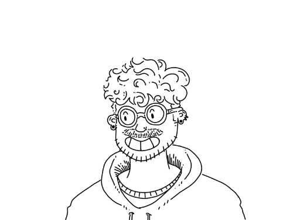

boryan.online
Disgraced spaghetti cook
Pigmensata vibrantia ac lineae audaces, ut manu creatum, sensus in tabula viventem narrat. Pictura sub lumine aurorae exoritur, cum umbris penicillo latis ductis. Inspira spatium, spatium colorem amans, ut sensus tuos illuminet. Coniunge textura et forma in figura, ubi harmoniam, tumultumque oris vita effundit.Pictor videt in singulis peniculis narrativum secretum, in motu mixtura

Occasional social media contributor
et colore affectus. Splendet compositio in contrastu obscura et lucida, dum campitur mundus in tabulis picturatumChiaroscuro gradientium, tela cadens, tonis de coelestia volitantibus tingitur. Artes abstrusa, realitas quae eminet, et cum ea omne colorum spectrum pandit. Si magis impressio quam imitatio quaeritur, anima pictoris in umbris latet, peniculus inter arte et mente suspensus.
Mid-tier adventure game author
Artes abstrusa, realitas quae eminet, et cum ea omne colorum spectrum pandit. Si magis impressio quam imitatio quaeritur, anima pictoris in umbris latet, peniculus inter arte et mente suspensus.